Candidate List 20260611 Previous Day Next Day Section 1: New Sources (age<1d) Cosmological Afterglow
Section 2: Old (1-5d) sources observed last night placeholder
Section 1: New Afterglow/FBOT Cands Last Night (1)
1. ZTF26abbddyd (Afterglow?FBOT?) [Back to Top] [Share] [Trigger Swift] [Fritz ] [Lasair ]RA, Dec: 218.543, 2.28292 14h34m10.32s, 2d16m58.53sGalactic (l, b): 352.02961, 55.04336 ext(g-r) = 0.041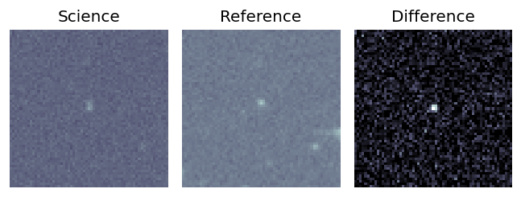
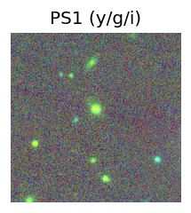
peak abs mag = -22.54 LegacySurvey: 1 sources in 3 arcsec Closest: d = 2.42 arcsec, 344.2 deg (east of north) photoz=0.26 (68% bounds 0.19, 0.35), type=DEV peak abs mag = -21.39 (68% bounds -20.56, -22.11) 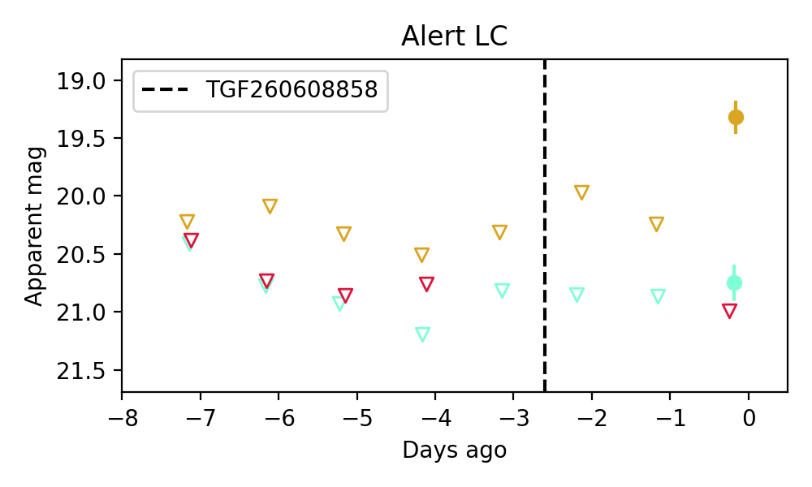
Consistent with synchrotron, g-r>0!
Section 2: Older Sources Observed Last Night (19)
0. ZTF26aaztkuj (FBOT?) [Back to Top] [Share] [Trigger Swift] [Fritz ] [Lasair ]RA, Dec: 220.52591, -19.93454 14h42m6.22s, -19d-56m-4.34sGalactic (l, b): 335.51097, 35.84096 WARNING: -4.0 deg from ecliptic plane ext(g-r) = 0.113LegacySurvey: 1 sources in 3 arcsec Closest: d = 2.59 arcsec, 75.2 deg (east of north) photoz=0.15 (68% bounds 0.03, 0.27), type=PSF peak abs mag = -20.97 (68% bounds -17.22, -22.4) Consistent with synchrotron, g-r>0!
1. ZTF26aaztwcq (Afterglow?) [Back to Top] [Share] [Trigger Swift] [Fritz ] [Lasair ]RA, Dec: 239.32552, 11.28156 15h57m18.13s, 11d16m53.63sGalactic (l, b): 22.26617, 43.65936 ext(g-r) = 0.057peak abs mag = -17.97 peak abs mag = -18.35 LegacySurvey: 1 sources in 3 arcsec Closest: d = 0.19 arcsec, 265.8 deg (east of north) photoz=0.06 (68% bounds 0.04, 0.07), type=EXP peak abs mag = -17.87 (68% bounds -17.1, -18.39) Consistent with synchrotron, g-r>0!
2. ZTF26abaftbn (FBOT?) [Back to Top] [Share] [Trigger Swift] [Fritz ] [Lasair ]RA, Dec: 227.06437, -4.72124 15h 8m15.45s, -4d-43m-16.48sGalactic (l, b): 354.21667, 44.1086 ext(g-r) = 0.098peak abs mag = -19.59 LegacySurvey: 1 sources in 3 arcsec Closest: d = 2.80 arcsec, 247.1 deg (east of north) photoz=0.09 (68% bounds 0.08, 0.11), type=SER peak abs mag = -19.01 (68% bounds -18.55, -19.35) Consistent with synchrotron, g-r>0!
3. ZTF26abagkaa (FBOT?) [Back to Top] [Share] [Trigger Swift] [Fritz ] [Lasair ]RA, Dec: 259.76876, 56.36176 17h19m4.50s, 56d21m42.34sGalactic (l, b): 84.48777, 34.95839 ext(g-r) = 0.022peak abs mag = -21.44 LegacySurvey: 1 sources in 3 arcsec Closest: d = 0.68 arcsec, 9.9 deg (east of north) photoz=0.12 (68% bounds 0.09, 0.16), type=EXP peak abs mag = -19.3 (68% bounds -18.61, -19.94)
4. ZTF26abamnrt (Afterglow?) [Back to Top] [Share] [Trigger Swift] [Fritz ] [Lasair ]RA, Dec: 247.04328, 35.70161 16h28m10.39s, 35d42m5.79sGalactic (l, b): 57.61745, 43.55321 ext(g-r) = 0.017peak abs mag = -19.50 peak abs mag = -18.88 LegacySurvey: 1 sources in 3 arcsec Closest: d = 1.78 arcsec, 47.7 deg (east of north) photoz=0.13 (68% bounds 0.11, 0.15), type=SER peak abs mag = -19.07 (68% bounds -18.6, -19.47)
5. ZTF26abamviv (Afterglow?) [Back to Top] [Share] [Trigger Swift] [Fritz ] [Lasair ]RA, Dec: 225.5719, 11.51105 15h 2m17.26s, 11d30m39.79sGalactic (l, b): 12.39871, 55.5645 ext(g-r) = 0.04peak abs mag = -18.00 LegacySurvey: 1 sources in 3 arcsec Closest: d = 8.01 arcsec, 214.7 deg (east of north) photoz=0.04 (68% bounds 0.03, 0.04), type=SER peak abs mag = -17.3 (68% bounds -16.95, -17.66) Consistent with synchrotron, g-r>0!
6. ZTF26abaqpii (FBOT?) [Back to Top] [Share] [Trigger Swift] [Fritz ] [Lasair ]RA, Dec: 228.83088, -5.70655 15h15m19.41s, -5d-42m-23.57sGalactic (l, b): 354.98921, 42.17265 ext(g-r) = 0.092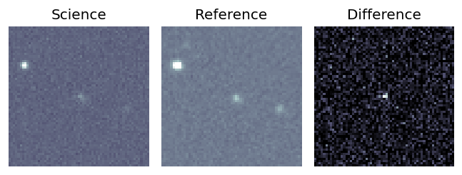
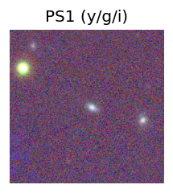
LegacySurvey: 1 sources in 3 arcsec Closest: d = 2.10 arcsec, 243.3 deg (east of north) photoz=0.18 (68% bounds 0.17, 0.2), type=SER peak abs mag = -19.9 (68% bounds -19.72, -20.12) 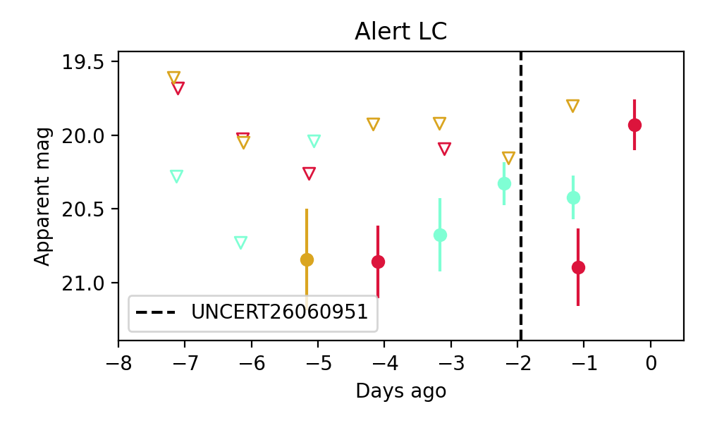
7. ZTF26abarrek (FBOT?) [Back to Top] [Share] [Trigger Swift] [Fritz ] [Lasair ]RA, Dec: 259.86739, -1.811 17h19m28.17s, -1d-48m-39.59sGalactic (l, b): 20.30349, 19.45394 ext(g-r) = 0.485PS1: 1 source in 3 arcsec Closest: d = 0.62 arcsec photoz=0.09+/-0.01 peak abs mag = -20.40 Consistent with synchrotron, g-r>0!
8. ZTF26abaxjou (FBOT?) [Back to Top] [Share] [Trigger Swift] [Fritz ] [Lasair ]RA, Dec: 196.93416, 8.98514 13h 7m44.20s, 8d59m6.52sGalactic (l, b): 315.67871, 71.45239 ext(g-r) = 0.031peak abs mag = -21.24 LegacySurvey: 1 sources in 3 arcsec Closest: d = 0.35 arcsec, 13.6 deg (east of north) photoz=0.33 (68% bounds 0.28, 0.4), type=SER peak abs mag = -21.66 (68% bounds -21.25, -22.12)
9. ZTF26abbcarl (FBOT?) [Back to Top] [Share] [Trigger Swift] [Fritz ] [Lasair ]RA, Dec: 178.72876, 21.5591 11h54m54.90s, 21d33m32.75sGalactic (l, b): 233.28178, 75.98537 ext(g-r) = 0.032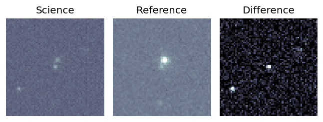
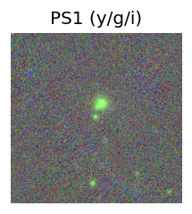
peak abs mag = -22.02 LegacySurvey: 1 sources in 3 arcsec Closest: d = 0.47 arcsec, 105.5 deg (east of north) photoz=0.33 (68% bounds 0.26, 0.37), type=REX peak abs mag = -21.47 (68% bounds -20.9, -21.82) 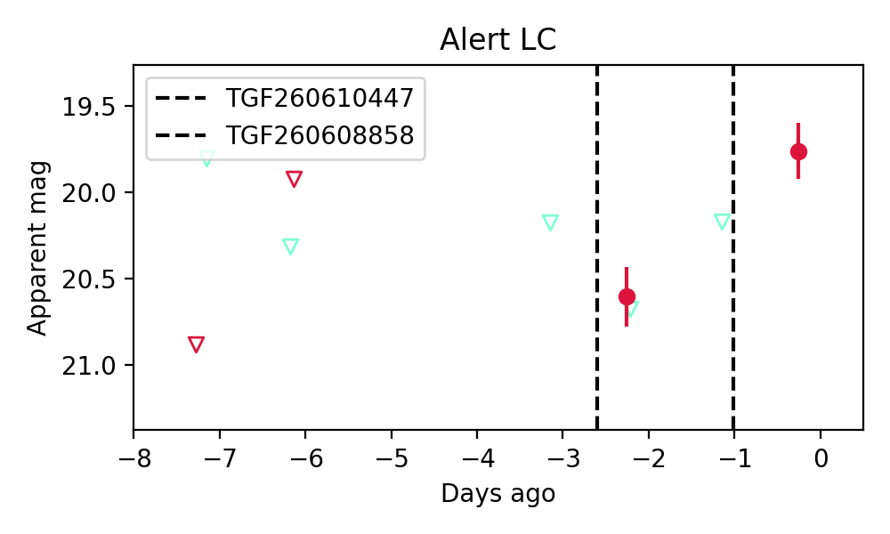
10. ZTF26abbcebb (FBOT?) [Back to Top] [Share] [Trigger Swift] [Fritz ] [Lasair ]RA, Dec: 223.42193, 21.73158 14h53m41.26s, 21d43m53.69sGalactic (l, b): 28.66932, 61.72856 ext(g-r) = 0.044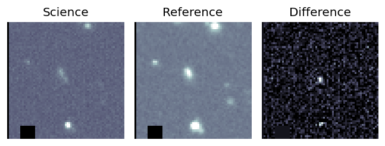
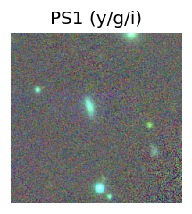
peak abs mag = -19.65 LegacySurvey: 1 sources in 3 arcsec Closest: d = 2.16 arcsec, 75.3 deg (east of north) photoz=0.38 (68% bounds 0.06, 1.32), type=DEV peak abs mag = -21.48 (68% bounds -17.14, -24.79) 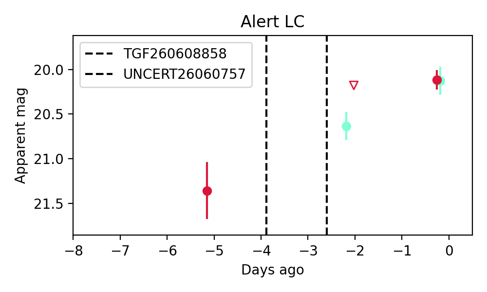
Consistent with synchrotron, g-r>0!
11. ZTF26abbcedv (Afterglow?) [Back to Top] [Share] [Trigger Swift] [Fritz ] [Lasair ]RA, Dec: 235.01923, 6.62808 15h40m4.62s, 6d37m41.10sGalactic (l, b): 13.66677, 45.06829 ext(g-r) = 0.061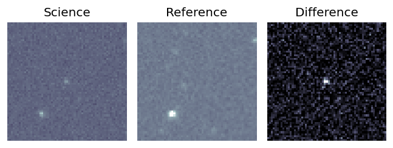
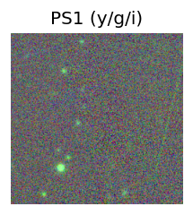
peak abs mag = -22.96 LegacySurvey: 1 sources in 3 arcsec Closest: d = 3.82 arcsec, 153.9 deg (east of north) photoz=0.73 (68% bounds 0.31, 1.33), type=PSF peak abs mag = -24.24 (68% bounds -22.06, -25.85) 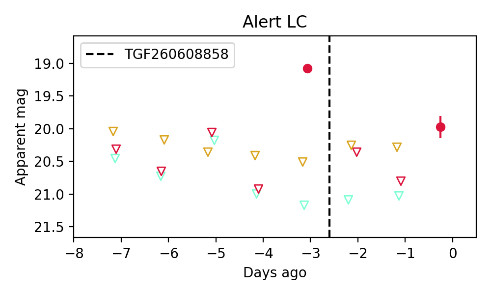
12. ZTF26abbckjx (FBOT?) [Back to Top] [Share] [Trigger Swift] [Fritz ] [Lasair ]RA, Dec: 225.60943, -4.13907 15h 2m26.26s, -4d-8m-20.65sGalactic (l, b): 353.30847, 45.53275 ext(g-r) = 0.151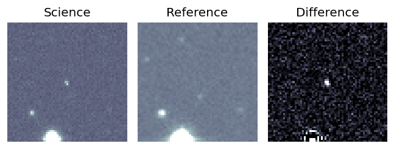
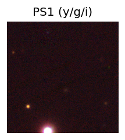
LegacySurvey: 1 sources in 3 arcsec Closest: d = 0.95 arcsec, 89.1 deg (east of north) photoz=0.63 (68% bounds 0.5, 0.87), type=PSF peak abs mag = -23.51 (68% bounds -22.9, -24.36) 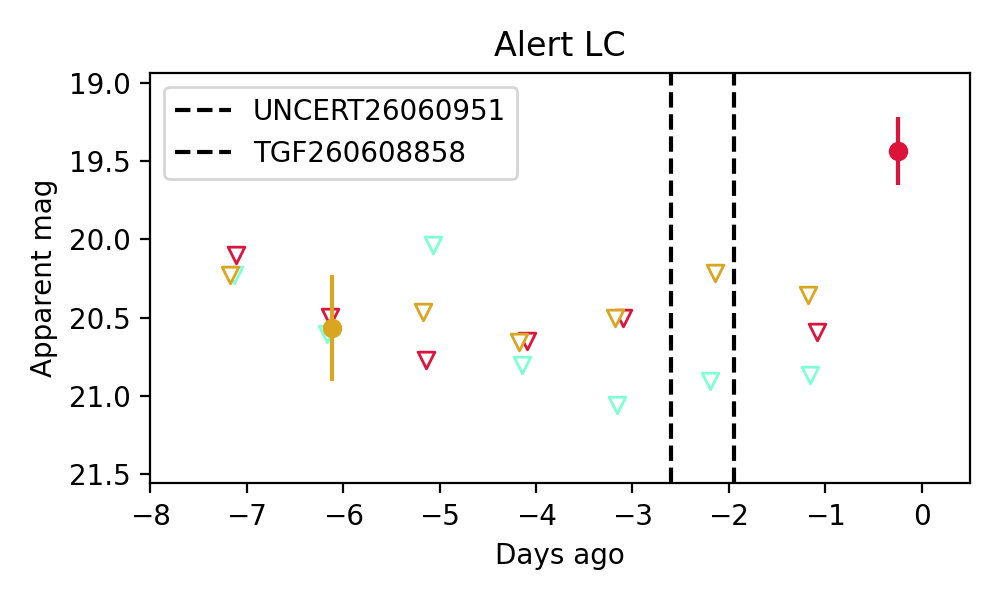
13. ZTF26abbdigq (FBOT?) [Back to Top] [Share] [Trigger Swift] [Fritz ] [Lasair ]RA, Dec: 255.63249, 59.71648 17h 2m31.80s, 59d42m59.34sGalactic (l, b): 88.87388, 36.80513 ext(g-r) = 0.018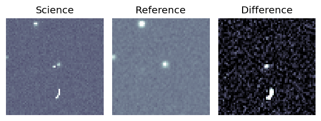
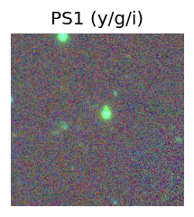
LegacySurvey: 1 sources in 3 arcsec Closest: d = 3.31 arcsec, 291.4 deg (east of north) photoz=0.2 (68% bounds 0.1, 0.22), type=PSF peak abs mag = -20.07 (68% bounds -18.33, -20.34) 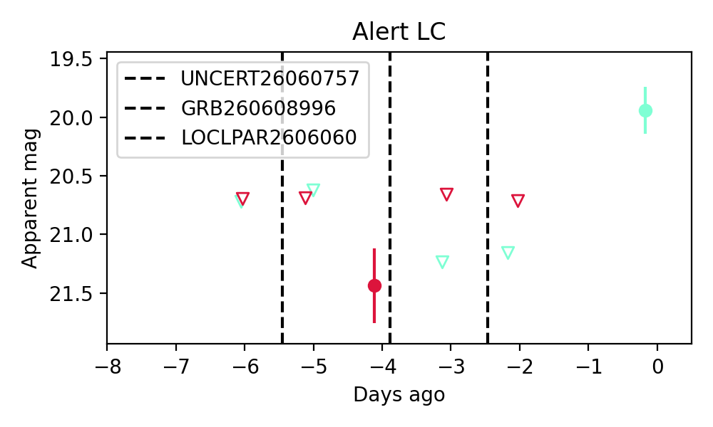
14. ZTF26abbdkef (Afterglow?) [Back to Top] [Share] [Trigger Swift] [Fritz ] [Lasair ]RA, Dec: 251.69663, -4.04061 16h46m47.19s, -4d-2m-26.21sGalactic (l, b): 13.68174, 25.29437 ext(g-r) = 0.292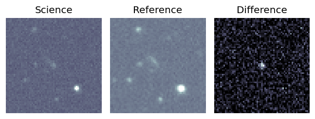
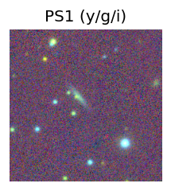
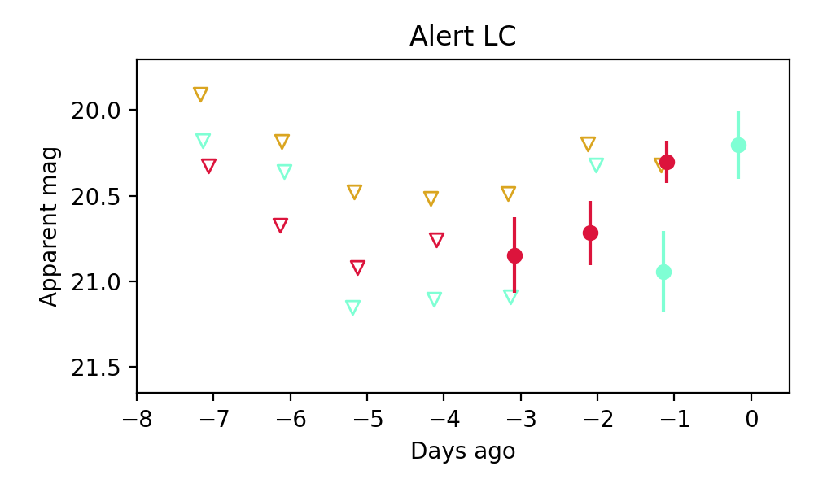
Consistent with synchrotron, g-r>0!
15. ZTF26abbdkwn (FBOT?) [Back to Top] [Share] [Trigger Swift] [Fritz ] [Lasair ]RA, Dec: 249.783, 0.57425 16h39m7.92s, 0d34m27.29sGalactic (l, b): 16.95339, 29.35792 ext(g-r) = 0.112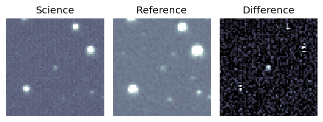
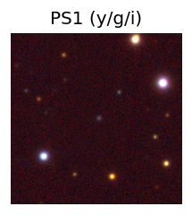
peak abs mag = -20.75 LegacySurvey: 1 sources in 3 arcsec Closest: d = 0.76 arcsec, 248.9 deg (east of north) photoz=0.12 (68% bounds 0.1, 0.15), type=REX peak abs mag = -18.88 (68% bounds -18.46, -19.47) 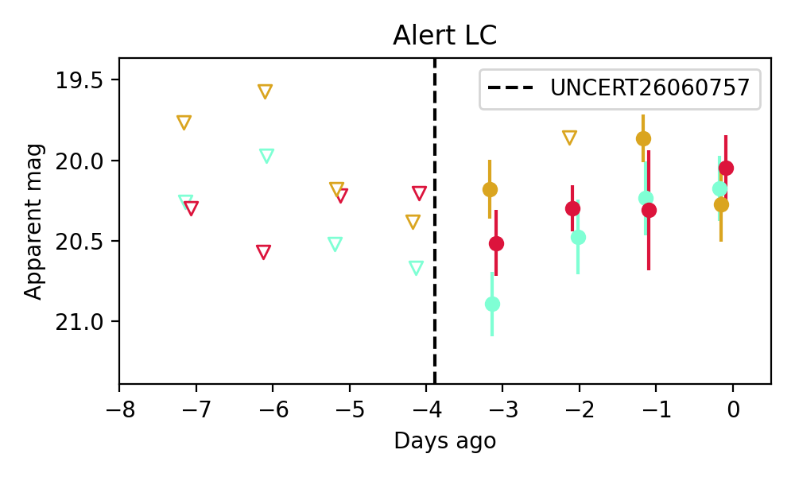
Consistent with synchrotron, g-r>0!
16. ZTF26abbdptd (Afterglow?) [Back to Top] [Share] [Trigger Swift] [Fritz ] [Lasair ]RA, Dec: 245.38124, -12.04782 16h21m31.50s, -12d-2m-52.16sGalactic (l, b): 2.43512, 25.74826 ext(g-r) = 0.35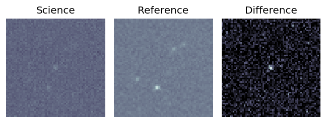
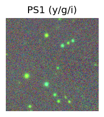
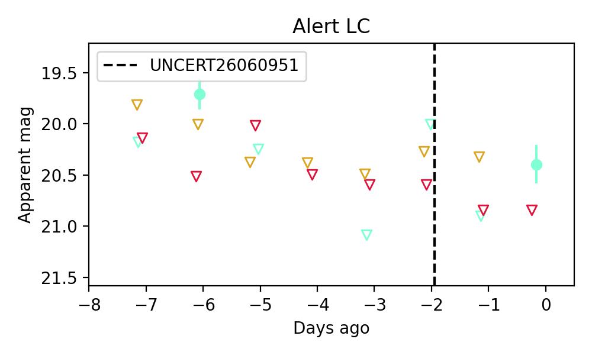
17. ZTF26abbeaiq (FBOT?) [Back to Top] [Share] [Trigger Swift] [Fritz ] [Lasair ]RA, Dec: 240.24124, -13.40679 16h 0m57.90s, -13d-24m-24.44sGalactic (l, b): 357.63947, 28.71622 ext(g-r) = 0.205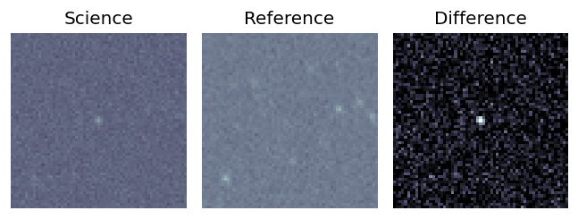
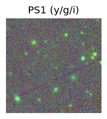
LegacySurvey: 1 sources in 3 arcsec Closest: d = 0.71 arcsec, 110.7 deg (east of north) photoz=0.57 (68% bounds 0.44, 0.77), type=PSF peak abs mag = -23.51 (68% bounds -22.86, -24.31) 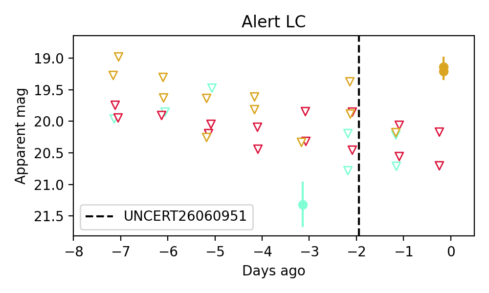
18. ZTF26abbffmw (FBOT?) [Back to Top] [Share] [Trigger Swift] [Fritz ] [Lasair ]RA, Dec: 251.48836, 34.55967 16h45m57.21s, 34d33m34.81sGalactic (l, b): 56.68052, 39.80787 ext(g-r) = 0.025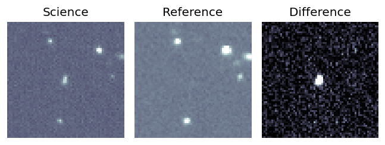
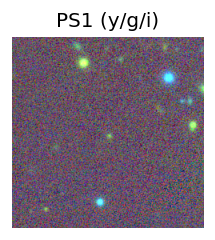
peak abs mag = -22.11 LegacySurvey: 1 sources in 3 arcsec Closest: d = 1.48 arcsec, 184.4 deg (east of north) photoz=0.61 (68% bounds 0.58, 0.65), type=REX peak abs mag = -24.16 (68% bounds -24.0, -24.31) 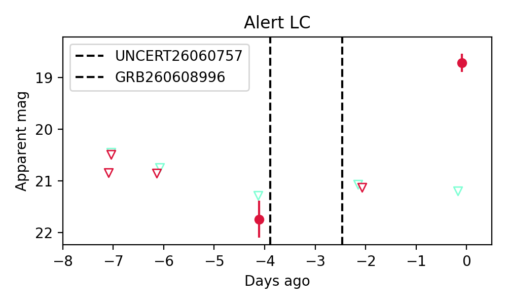